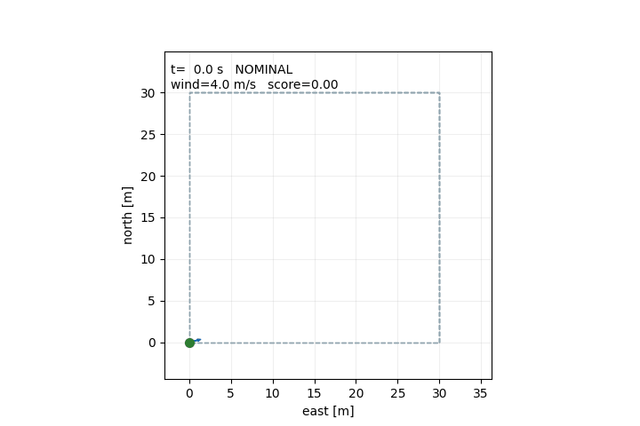
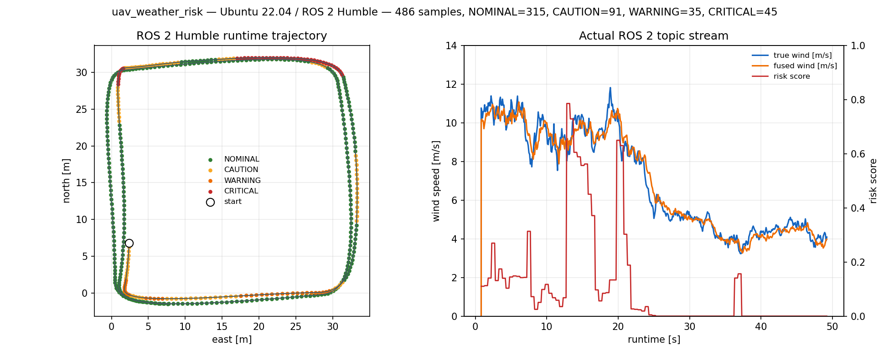
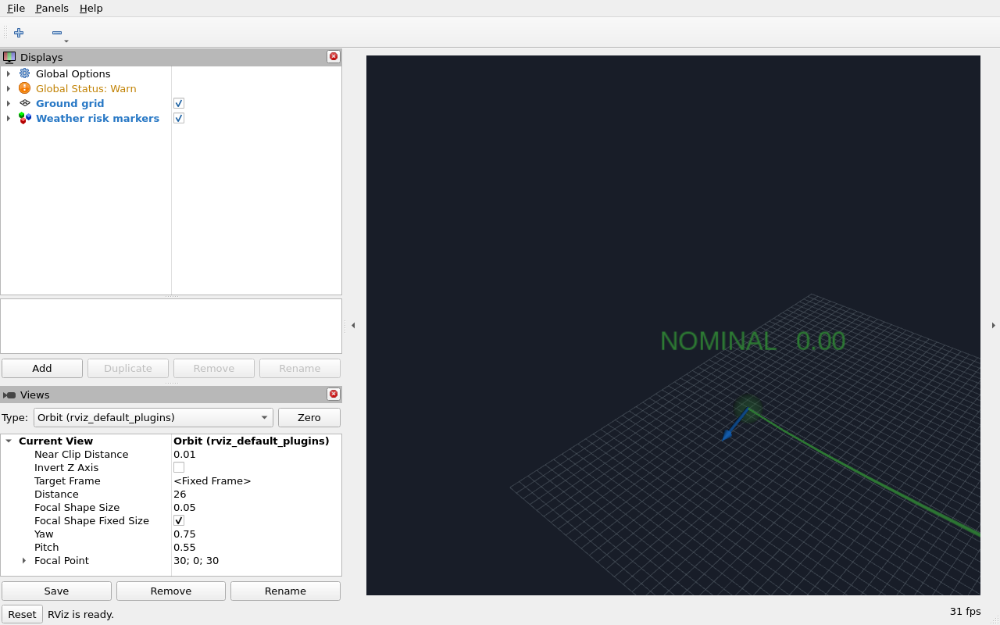
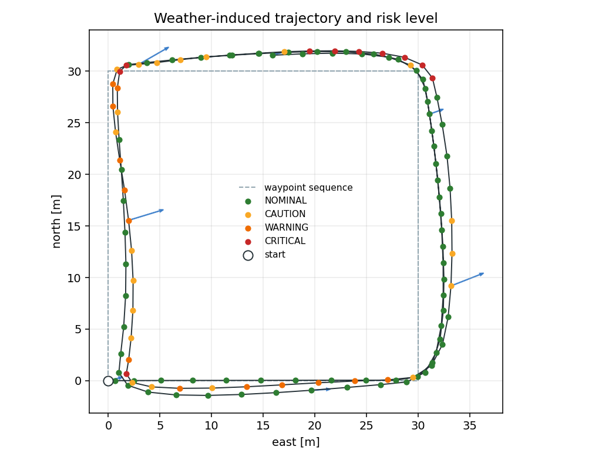
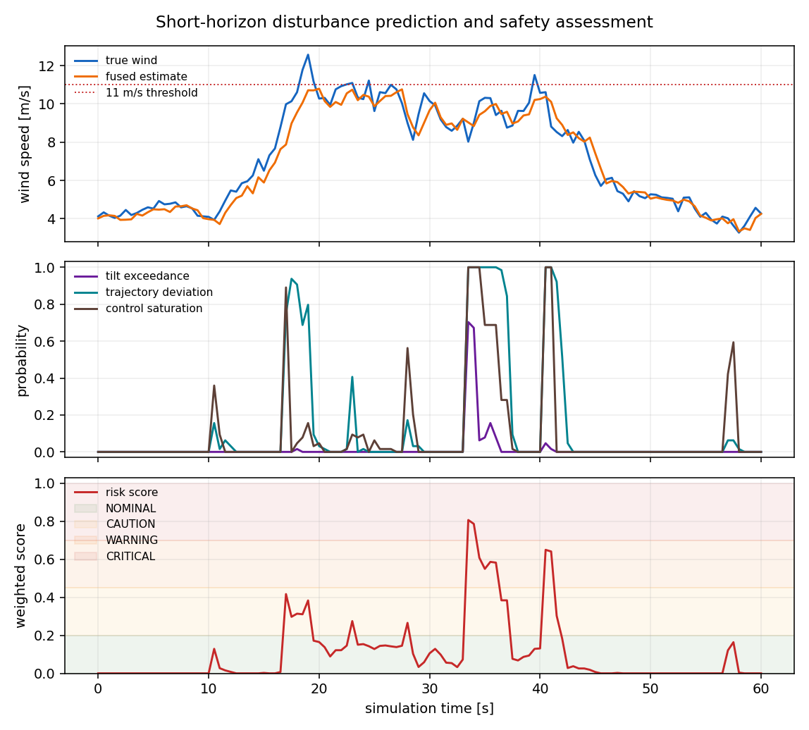
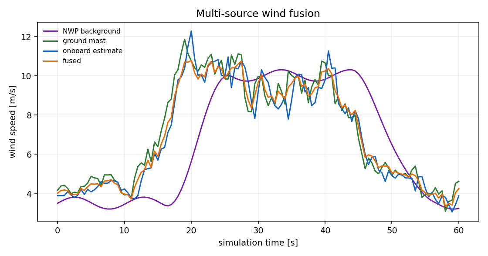

低空多源气象扰动下无人机影响预测与风险分级（ROS 2）
本项目在 ROS 2 中演示一条从多源气象估计到小型飞行器响应预测、再到四级安全风险的完整链路。输入不是预先录制的标签，而是三路异步风估计；预测不是单点风速，而是未来 10 秒的姿态、轨迹偏差和控制裕度超限概率。

项目刻意保持自包含：不调用在线气象 API，不依赖 AirSim，不发送飞控指令。其价值在于把“天气数据”转化为可复现的飞行风险指标，并暴露模型边界，便于后续替换为真实气象场和更高保真飞行器模型。
1. 定位与边界
本项目适合课程实验、算法原型和 ROS 2 接口联调，不是以下系统：
- 不是业务气象预报，不提供真实天气准确率承诺；
- 不是 6-DOF 飞行动力学或风洞试验；
- 不是适航认证、运行许可或空管决策工具；
- 不是纯气象因果归因。风险分数同时包含当前机动需求，航点切换时也可能出现短时升高。
模块只发布风险建议和可视化标记，不发布速度、姿态或航点控制指令。实机运行前须由持证人员独立评估。
2. 方法链路
NWP 背景场 ─┐
地面风塔 ─┼─ 逆方差融合 ─ 平均风 + 阵风/湍流 ─ 降阶飞行器模型
机载估计 ─┘ │
├─ 蒙特卡洛响应集合
├─ 超限概率与风险分数
└─ ROS 2 JSON + MarkerArray
演示中的三路数据由 GustFrontScenario 生成：NWP 平滑但有 6 秒延迟，地面风塔响应快，机载估计有 1 秒延迟和固定偏置。这样可以在没有外部数据的情况下稳定复现“多源不一致、融合后更平滑”的行为。
3. 多源风场融合
对第 个源的 ENU 风矢量 、标准差 、置信度 和数据年龄 ，权重取
融合不确定度按一阶误差传播计算：
默认 age_tau_s=30。当某一路数据变旧或置信度降低时，它的权重会下降，但不会把其他源直接丢弃。融合结果和每一路原始估计同时写入 weather 话题，方便审计。
4. 扰动与飞行器响应
阵风和湍流用离散 Ornstein-Uhlenbeck 过程近似：
飞行器采用二维水平加高度的降阶模型，核心是相对气流阻力：
控制器根据位置误差产生速度指令，再产生加速度指令。倾角不是完整姿态解算，而是维持指令加速度并补偿水平阻力所需的等效倾角：
因此这里的倾角是控制裕度代理量，不是实测滚转/俯仰角。代码中的 roll_deg、pitch_deg 也只用于演示可视化姿态，不应作为飞控姿态真值。
5. 影响预测与风险指标
每次评估从当前状态出发，生成 samples 条未来阵风样本，在 horizon_s 内推进同一控制律。四项指标分别为：
| 指标 | 定义 | 默认阈值 |
|---|---|---|
| 风速超限 | 集合中最大风速超过阈值 | 11 m/s |
| 等效倾角超限 | 集合中最大等效倾角超过阈值 | 33° |
| 轨迹偏差 | 相对无风参考轨迹的最大位置偏差 | 2.5 m |
| 控制饱和 | 所需水平加速度超过可用加速度的比例 | 1.10 |
轨迹偏差不是“到远航点的距离”。对每个评估时刻，先在同一初始状态下做一次无风参考推进，再比较扰动集合与参考轨迹在同一时刻的位置。这样 30 米外的前方航点不会天然被判定为风险。
风险分数为四项超限概率的加权和：
同时设置概率下限规则，防止单项极端超限被平均分掩盖：
| 等级 | 分数条件 | 额外条件 | 含义 |
|---|---|---|---|
| NOMINAL | 最大概率 < 0.50 | 当前条件下未发现明显超限趋势 | |
| CAUTION | 或最大概率 ≥ 0.50 | 需要关注，建议降低速度或延迟任务 | |
| WARNING | 或最大概率 ≥ 0.90 | 高风险趋势，建议改变航线或等待天气窗口 | |
| CRITICAL | 或最大概率 ≥ 0.98 | 演示中的最高告警级，不等于真实飞行许可结论 |
6. 程序结构
src/air/uav_weather_risk/
├── README.md
├── package.xml
├── setup.py / setup.cfg
├── config/demo.yaml
├── launch/main.launch.py
├── resource/uav_weather_risk
├── sample/timeseries.csv / summary.json
├── tests/test_core.py
├── main.py
└── uav_weather_risk/
├── core/
│ ├── types.py # ENU 向量、数据容器
│ ├── weather.py # 多源融合与阵风过程
│ ├── aircraft.py # 降阶响应模型
│ ├── risk.py # 蒙特卡洛与风险分级
│ └── scenario.py # 阵风锋演示场景
├── demo_node.py # 合成气象与飞行状态发布
├── risk_node.py # 风险预测与 MarkerArray
├── headless_demo.py # 无 ROS 的离线入口
└── plotting.py # CSV/PNG/GIF 输出
7. 构建与运行
推荐环境：Ubuntu 22.04、ROS 2 Humble、Python 3.10。Humble 之外的发行版未验证。
source /opt/ros/humble/setup.bash
rosdep install --from-paths src/air/uav_weather_risk --ignore-src -r -y
colcon build --symlink-install --packages-select uav_weather_risk
source install/setup.bash
python3 -m unittest discover -s src/air/uav_weather_risk/tests -v
ros2 launch uav_weather_risk main.launch.py
启动后查看：
ros2 topic list | grep uav_weather_risk
ros2 topic echo /uav_weather_risk/assessment
RViz2 中添加 MarkerArray 显示，话题选择 /uav_weather_risk/markers，Fixed Frame 设为 map。标记包括预测轨迹集合、当前风险包络球、融合风矢量和等级文字。SPHERE 的 scale.x/y/z 是直径，本模块按等级设置为 1.0、1.6、2.2、2.8 米。
话题
| 话题 | 类型 | 方向 | 说明 |
|---|---|---|---|
/uav_weather_risk/odom |
nav_msgs/Odometry |
输入 | ENU 位置、速度，frame map |
/uav_weather_risk/weather |
std_msgs/String |
输入 | 融合风场与原始源 JSON |
/uav_weather_risk/target |
geometry_msgs/PointStamped |
输入 | 当前航点；缺失时按悬停评估 |
/uav_weather_risk/assessment |
std_msgs/String |
输出 | 等级、分数、概率、原因、输入年龄 |
/uav_weather_risk/markers |
visualization_msgs/MarkerArray |
输出 | RViz2 预测与风险可视化 |
风险节点对坏 JSON、非有限数、缺失输入做防御处理。输入超过 stale_timeout_s 时发布 valid=false、建议等级 CAUTION，并在 reason 中说明是数据陈旧，而不是伪造一个正常结论。
8. 离线复现
不安装 ROS 2 也能运行核心模型。仅绘图需要 Matplotlib；核心算法只使用 Python 标准库。
cd src/air/uav_weather_risk
python3 -m pip install matplotlib
python3 main.py --duration 60 --seed 42 --output-dir artifacts/demo
输出：
timeseries.csv：121 个评估时刻的时间、位置、风场、概率和等级；summary.json：峰值、等级计数和记录 SHA256；trajectory.png、risk_timeline.png、wind_sources.png；demo.gif：俯视轨迹动画。
随包 sample/ 目录保存了本次实际生成的小型 CSV 和 summary，可直接核对；完整 PNG/GIF 位于 docs/img/air/uav_weather_risk/。
9. 本次实际运行结果
9.1 ROS 2 Humble 实测
在 Ubuntu 22.04.5 / ROS 2 Humble / Python 3.10 虚拟机中完成了实际构建、节点启动和话题录制：
colcon build --packages-select uav_weather_risk
Finished <<< uav_weather_risk [0.80s]
Summary: 1 package finished [1.04s]
12 项 unittest 全部通过。启动 ros2 launch uav_weather_risk main.launch.py 后确认了 5 个话题：
/uav_weather_risk/assessment
/uav_weather_risk/markers
/uav_weather_risk/odom
/uav_weather_risk/target
/uav_weather_risk/weather
连续录制 49.2 秒，共 486 个真实 ROS 2 里程计样本：
| 项目 | 结果 |
|---|---|
| NOMINAL | 315 |
| CAUTION | 91 |
| WARNING | 35 |
| CRITICAL | 45 |
| 最大真实风速 | 11.81 m/s |
| 最大融合风速 | 11.07 m/s |
| 最大风险分数 | 0.785 |

这张图的左图来自 /uav_weather_risk/odom 的实际轨迹，颜色来自 /uav_weather_risk/assessment；右图的真实风速、融合风速和风险分数来自同一时间段的话题流，不是离线重算。

上图是在 VM 的 Xvfb 显示中实际启动 RViz2 后抓取的窗口，不是宿主机生成的示意图。RViz2 订阅 /uav_weather_risk/markers，画面中可以看到风险等级文字、风险包络、风矢量和预测轨迹。
运行中抓取的一条有效评估消息：
{"valid":true,"target_available":true,"level":0,"level_name":"NOMINAL","score":0.0,"probabilities":{"wind":0.0,"tilt":0.0,"position":0.0,"control":0.0},"predicted_p95":{"wind_mps":9.17,"tilt_deg":14.71,"position_error_m":0.82,"control_saturation":0.51},"dominant_factor":"wind","reason":"wind above 11.0 m/s in 0% of 64 rollouts over 10.0 s","horizon_s":10.0,"samples":64}
原始 CSV、summary、话题列表和这条评估消息保存在 sample/ 目录，便于复核。
9.2 离线 60 秒复现
环境：Windows 11、Python 3.13.7；NumPy 2.3.4、Matplotlib 3.10.8 仅用于绘图。
固定 seed=42、60 秒、评估周期 0.5 秒、每次 64 个集合成员的本次输出：
| 项目 | 结果 |
|---|---|
| 评估次数 | 121 |
| NOMINAL | 78 |
| CAUTION | 20 |
| WARNING | 13 |
| CRITICAL | 10 |
| 最大真实风速 | 12.57 m/s |
| 最大融合风速 | 10.79 m/s |
| 最大等效倾角 | 33.23° |
| 最大控制饱和 | 1.285 |
| 最大风险分数 | 0.807 |
| 峰值时刻 | 33.5 s |
| 记录 SHA256 | cc617e25...d600173a |



这些离线图来自同一份实际 CSV，不是手工绘制的示意图。
10. 验证状态与提交前检查
已完成：
- Ubuntu 22.04.5 / ROS 2 Humble 下
colcon build、ros2 launch和 5 个话题的实际运行； - 49.2 秒、486 个
/uav_weather_risk/odom样本的 ROS 2 运行数据录制与绘图； - VM 内 Xvfb + RViz2 实际加载
/uav_weather_risk/markers并抓取渲染截图； - 12 项核心
unittest； - 60 秒离线端到端运行，CSV、summary、PNG、GIF 均由同一
seed=42生成； package.xml使用ament_python，入口、launch、config、resource 和 README 齐备。
尚未完成：
- 没有真实气象数据、AirSim 飞行或实机测试。
- 还应由另一名同学在另一台机器复跑一次并确认干净退出。
11. 参数说明
| 参数 | 默认值 | 说明 |
|---|---|---|
rate_hz |
10.0 | 演示节点发布频率 |
duration_s |
0.0 | 0 表示持续运行 |
assessment_period_s |
0.5 | 风险评估周期 |
horizon_s |
10.0 | 预测时域 |
dt_s |
0.25 | 集合推进步长 |
samples |
64 | 每个评估时刻的集合成员数 |
max_wind_mps |
11.0 | 风速超限阈值 |
max_tilt_deg |
33.0 | 等效倾角阈值 |
max_position_error_m |
2.5 | 相对无风参考轨迹的偏差阈值 |
max_control_saturation |
1.10 | 控制饱和阈值 |
turbulence_sigma_mps |
1.3 | 阵风过程标准差 |
turbulence_tau_s |
3.0 | 阵风相关时间 |
stale_timeout_s |
2.0 | 输入过期判定 |
keep_paths |
8 | 保留并可视化的集合轨迹条数 |
风险阈值是演示默认值，不是监管限值。替换机型或场景时必须重新标定，并在文档中记录标定数据来源。
12. 局限与后续
- 当前气象场是合成场景，不是 ERA5、雷达、激光雷达或地面站实测；真实数据接入需要单独的数据适配器和缺测处理。
- 飞行器模型是降阶代理，不包含旋翼气动、执行机构延迟、姿态控制器内环和电池压降；不可用于适航或寿命结论。
- 风险分数没有经过真实事故样本校准，概率含义是“模型集合内超限频率”，不是经过验证的实际事故概率。
- 尚未实现 6-DOF 与 PX4/ArduPilot SITL 闭环，也没有真实飞行数据对照。
- 后续可扩展：接入 OpenHUTB/AirSim 状态、ERA5/地面站适配器、集合校准、SORA 风格风险矩阵、6-DOF 校验和真实飞行日志回放。
13. 参考与术语
- MIL-F-8785C / Dryden 湍流模型：阵风相关时间与功率谱的工程近似；
- JARUS SORA：仅参考其“地面风险/空中风险”和运行边界的分层思想，本项目不声称符合 SORA；
- 中国民航局 CCAR-92《民用无人驾驶航空器运行安全管理规则》：实际运行须遵循现行法规与地方空域管理要求；
- OpenHUTB/ros2 的
uav_mission_safety_manager、telemetry_diagnostics模块：本项目沿用其“可离线复现 + ROS 2 薄封装 + 明示验证边界”的工程风格。
14. 大模型使用声明
本项目使用 OpenAI Codex 辅助完成 ROS 2/Python 代码、单元测试、文档草稿、离线仿真与绘图脚本，以及 PR 描述整理。实验 CSV、ROS 2 运行数据和图表均由随附代码实际运行生成，未使用大模型生成或篡改实验数据。作者 Leclerc666 已逐项复核代码、参数和文档，并对提交内容、数据真实性及后续维护负责。